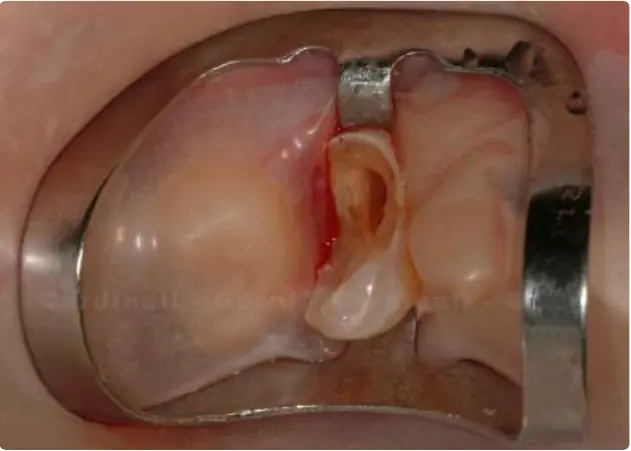

نسخه استخراجشده؛ ترجمه یا تأیید علمی انجام نشده است. وضعیت: captured
قدم 1 · theory
جمعبندی: ضایعهی کلاس V زیر رابردم
کلمپ 212 دوکمانه، بیبال و کنارزننده است: ورق و لثهی آزاد را از روی ضایعهی کلاس V پایین نگه میدارد، نه ورق را روی قوس.

کلمپ 212 لبهی لثه را کنار زده و روی بافت باقیماندهی فاسیال پرمولر نشسته است. (Cardinali & Gorni. The Use of the Rubber Dam in Endodontics (StyleItaliano) — Fig. 24 (Ch.10))
پیش از رابردم: رنگ را انتخاب کن؛ وسعت ایزولاسیون و جای کلمپ لنگر را بسنج.
ورق: ضخیم؛ سوراخ حدود ۱ میلیمتر فاسیالتر، کمی بزرگتر و کمی دورتر از سوراخهای کناری.
گذاشتن: روش ورق اول؛ این کلمپ بالی ندارد و ورق را نمیشود پس از نشستنش از روی دو کمان رد کرد. چون پس از ورق به دهان میرود، نخ ایمنی نمیخواهد. اول فک لینگوال، بعد کشیدن ورق با شست و نشاندن فک فاسیال دستکم ۰٫۵ و ترجیحاً ۱ میلیمتر اپیکالتر از لبهی تراش.
تثبیت: کامپاند یا PVS روی سطح انسیزال و لینگوال، دور از ناحیهی کار.
برداشتن: فکها را کاملاً باز کن، امبرژرها را از کامپاند پاک کن، بعد ورق.
چند نکتهی تکمیلی
کلمپ 212 در درمان ریشه هم به کار میرود؛ مثلاً روی پرمولر بالایی که فقط با این کلمپ قانون چهار نقطه رعایت میشد.
رابردم شاید بقای ۶ ماههی ترمیم کامپوزیت ضایعهی غیرپوسیدگی سرویکال را بیشتر کند؛ قطعیت این شواهد کم است.
اگر رابردم ممکن نیست، نخ رترکشن همراه کنترل بزاق جایگزین است.
قدم 2 · question
دانشجویی میپرسد چرا به کلمپ لنگر مولر نخ ایمنی بستهای ولی به کلمپ 212 نه. کدام پاسخ درست است؟
۰۱
کلمپ 212 پس از جا افتادن ورق میرود و ورق زیرش راه حلق را بسته است
۰۲
دو کمان کلمپ 212 آنقدر پهناند که کلمپ رهاشده هرگز از حلق بیمار رد نمیشود
۰۳
کلمپ 212 با کامپاند ثابت میشود و کلمپ تثبیتشده دیگر هرگز از جایش نمیافتد
۰۴
کلمپ 212 روی دندان قدامی است و کلمپ قدامی به حلق نزدیک نمیشود
قدم 3 · question
دانشجویی رنگ ترمیم کلاس V ثنایای بالا را پس از ۲۰ دقیقه کار زیر رابردم انتخاب کرد. یک هفته بعد ترمیم روشنتر از خود دندان به نظر میرسد. چه اتفاقی افتاده بود؟
۰۱
کامپاند روی دندان کناری آن را تیره کرده و مقایسهی رنگ را به هم زده بود
۰۲
ورق تیره کنتراست داده بود و دانشجو رنگ دندان را تیرهتر از واقع دید
۰۳
دندان زیر رابردم خشک و روشنتر شده بود و رنگ روشنتری انتخاب شد
۰۴
شیدگاید زیر نور یونیت خیس نشده بود و رنگهایش تیرهتر دیده میشدند
قدم 4 · question
فک لینگوال کلمپ 212 را کمی اپیکالتر از بیشترین برجستگی نشاندهای و حالا باید ورق فاسیال را پایین بکشی تا ضایعه دیده شود. کدام انگشت چه میکند؟
۰۱
هر دو انگشت ورق فاسیال را پایین میکشند و فک لینگوال خودش بیتکیه سر جایش میماند
۰۲
شست فک لینگوال را نگه میدارد و اشاره ورق فاسیال را رو به اکلوزال بالا میکشد
۰۳
اشاره ورق لینگوال را پایین میکشد و شست فک فاسیال را روی ضایعه فشار میدهد
۰۴
اشاره فک لینگوال را نگه میدارد و شست ورق فاسیال را رو به اپیکال میکشد
قدم 5 · question
دانشجویی چوب کامپاند را آنقدر روی شعله نگه داشت که سرش کش آمد و باریک شد، و همان را روی کمانهای کلمپ 212 گذاشت. کار درست چه بود؟
۰۱
کامپاند را بیشتر گرم میکرد تا روان شود و در امبرژرها جاری شود
۰۲
کامپاند را کمی در آب خنک میکرد، بعد سطحش را کوتاه گرم میکرد و میگذاشت
۰۳
کامپاند را همانطور میگذاشت و با پوار گرم نگهش میداشت
۰۴
کامپاند کشآمده را دور میانداخت، چون کامپاند یک بار گرمشده دیگر به فلز نمیچسبد
قدم 6 · question
کامپاند را روی کمانها و سطح لینگوال کلمپ 212 شکل دادهای. گام بعد چیست؟
۰۱
دستکم ۲۰ ثانیه با پوار خنکش کنی، انگشت را برداری و پایداری را بیازمایی
۰۲
بلافاصله انگشت را برداری تا کامپاند در حال سفت شدن همراه کلمپ جابهجا نشود
۰۳
حدود ۵ ثانیه با اسپری آب خنکش کنی و بیآزمون تراش را شروع کنی
۰۴
کامپاند را ۲۰ ثانیه با لایتکیور نور بدهی تا سفت شود و بعد تراش را شروع کنی
قدم 7 · question
کلمپ ورق را تا زیر شروع فرورفتگی فورکیشن مولر پایین برده و بزاق از درز میان ورق و ریشه نشت میکند. چه میکنی؟
۰۱
لبهی ورق را اینورت نشده رها میکنی تا روی فرورفتگی بخوابد
۰۲
سوراخ ورق را کوچکتر میزنی تا ورق روی فرورفتگی هم بچسبد
۰۳
درز را با Cavit میبندی که در محیط مرطوب سخت میشود
۰۴
کلمپ را برمیداری تا ورق به روی سطح محدب تاج برگردد و سیل کند
قدم 8 · question
دانشجویی میگوید کلمپ 212 چون در گروه قدامی فروخته میشود، برای ضایعهی ریشهی مولری با تاج بلند به کار نمیآید. پاسخ درست چیست؟
۰۱
فقط اگر یک کمانش را ببری، چون کمان دیستالش در ناحیهی مولر به گونه میخورد
درست میگوید؛ دو کمان کلمپ 212 عقبتر از پرمولر جا نمیشوند
۰۴
کلمپ 212 یا نسخهی تغییریافتهاش روی یک ریشهی چنین مولری هم مینشیند
قدم 9 · question
برای پایین بردن لبهی ورق روی ضایعهی سرویکال ثنایای بالا بیکلمپ، لیگاتور نخ دندان را چطور میبندی؟
۰۱
فقط از دو تماس، بیدور زدن دندان، و گره روی سپتوم ورق
۰۲
دور دندان، در فاسیال پایینتر از ضایعه، و گره در لینگوال
۰۳
دور دندان، در لینگوال پایینتر از سینگولوم، و گره در فاسیال
۰۴
دور دو دندان کناری با هم، و گره در امبرژر انسیزال میان آن دو دندان
قدم 10 · question
نوکهای کلمپ 212 باید تیز بمانند تا فک فاسیال روی سمنتوم لیز نخورد.
۰۱
صحیح
۰۲
غلط
قدم 11 · question
چرا کلمپ 212 را با روش ورق اول میگذاری و نه با روش بال یا کلمپ اول؟
۰۱
فکهایش آنقدر پهناند که ورق پس از نشستن کلمپ از رویشان رد نمیشود
۰۲
بالی ندارد که در سوراخ گیر کند و ورق را نمیشود از روی دو کمانش رد کرد
۰۳
بیورق روی دندان پایدار نمیماند و در روشهای دیگر پیش از رسیدن ورق میپرد
۰۴
در روشهای دیگر نخ ایمنی لازم است و به کلمپ 212 نمیشود نخ بست
قدم 12 · question
کلمپ 212 چون کلمپ قدامی است در درمان ریشهی پرمولر بالا به کار نمیرود، حتی اگر فقط با آن قانون چهار نقطه رعایت شود.
۰۱
صحیح
۰۲
غلط
قدم 13 · question
برای ضایعهی کلاس V کانین، مولر اول را هم بیرون میآوری تا کلمپ لنگر از جای کلمپ 212 دور بماند.
۰۱
صحیح
۰۲
غلط
قدم 14 · question
بیمار ۶۰ ساله ضایعهی کلاس V روی ریشهی فاسیال ثنایای میانی بالا دارد که لبهاش ۱٫۵ میلیمتر زیر لثه است و لثهی رویش ضخیم و فیبروز است؛ پریودنشیوم سالم است. کدام برنامه کامل و درست است؟
۰۱
ورق ضخیم با سوراخ فاسیالتر؛ رها کردن کلمپ 212 و کار روی لبهی ورق؛ نخ ایمنی ۳۰ سانتیمتری به فریم؛ تثبیت ورق با لیکوئید دم روی لثهی فیبروز
۰۲
ورق نازک با سوراخ روی جای الگو؛ کشیدن زورکی لثه با فک فاسیال؛ نشاندن هر دو فک همزمان؛ بیتثبیت، چون کلمپ روی ثنایای تکریشه لق نمیزند و کامپاند لازم نیست
۰۳
ورق ضخیم با سوراخ لینگوالتر؛ برش افقی بلند تا مخاط آلوئولار برای آزادی کامل؛ فک فاسیال اول و روی خود ضایعه؛ تثبیت با کامپاند روی سطح فاسیال دندانهای کناری
۰۴
ورق ضخیم، سوراخ فاسیالتر و کمی بزرگتر؛ یک یا دو برش کوتاه در لثهی کراتینیزه؛ اول فک لینگوال، فک فاسیال ۰٫۵ تا ۱ میلیمتر زیر لبهی تراش؛ کامپاند